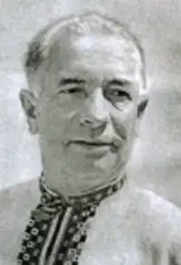
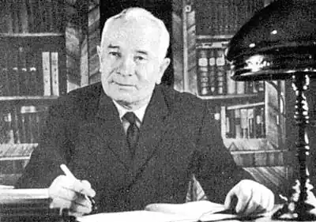

Степан Олійник – відомий український поет, обдарування і талант якого на повну силу виявився в гуморі і сатирі. Цю людину знали – без перебільшення – майже в усьому СРСР та за кордоном. Поет–гуморист, сатирик, він майже чотири десятиліття віддав праці в літературі і понад п'ять десятиріч – журналістиці. Боровся за ствердження добра і правди, чесності й благородства. Без його творчого доробку неможливо уявити українську літературу.
Народився Степан Іванович Олійник 3 квітня 1908 року в селі Пасисели на Одещині в багатодітній сім'ї хліборобів, згодом родина переїхала в с. Левадівку. Після закінчення початкової школи здібний і допитливий до всього хлопець продовжив навчання в Одесі, де закінчив трудову семирічну школу ім. Лесі Українки (1926), а згодом кооперативний технікум (1929). Твердо вирішивши присвятити своє життя літературній діяльності, восени 1929 р, С. Олійник вступає до Одеського педагогічного інституту. В студентські роки, поєднуючи навчання з літературною діяльністю, молодий письменник писав і друкував вірші в газеті "Чорноморська комуна", в одеських журналах "Шквал" та "Металеві дні".
Коли в 1930–му батько потрапив під "розкулачку", юнак уже був студентом. Ясна річ, сина "ворога народу" з вузу виключили, і він влаштувався на роботу стерновим на кораблі. А коли через рік відновився в педінституті, то заарештували вже його самого. За те, що складав дотепні частівки для студентської стіннівки "Синя блуза". Одним із "доказів буржуазного націоналізму" стала також українська вишивана сорочка. Донощик повідомляв, буцімто Олійник вербував у антирадянське молодіжне підпілля лише тих, хто одягався у вишиванку. Справді, свого часу він поклявся носити це національне вбрання, незалежно від моди. Як оберіг. І на столі слідчого помережане хрестиком полотно лежало поруч із конспектами та віршами. Та 1931–й рік був не такий жорстокий, як 1937–й. Отож хлопця невдовзі випустили. Можливо, врятувало те, що його друг звернувся з листом до "всесоюзного старости" Калініна від імені майже двохсот однокурсників. До того ж охоронець відібрав у в'язня блокнот із його віршами, і після того... став прихильнішим. Перебування в казематі не минулося безслідно; від нервового стресу захворів на епілепсію. Як згадувала сестра Ольга, під час нападів мати накривала сина хусткою і молилася. Ото й усе лікування. Відпустила недуга лише по війні. У 1934 році Степан Іванович закінчив педінститут, деякий час працював викладачем української мови і літератури, а за 1935 р. перейшов на роботу до обласної редакції газети "Чорноморська комуна". Як кореспондент обійшов і об'їздив багато районів Одеської області, публікував поезії в газетах. 1936–го почалися тотальні арешти. В кожному вбачали потенційного запроданця, зловмисника, шпигуна. Агентурна мережа НКВС розширювалася. Звичайно, ясноокого юнака, котрий ставав душею будь–якого товариства, не могли обійти увагою: запросили до відповідного кабінету й запропонували співпрацю. Та м'який, інтелігентний Олійник категорично відмовився. Була ще одна спроба схилити його на свій бік. Коли по війні він повернувся до Києва, знову викликали на Короленка "для важливої розмови". Не піддався на умовляння, не злякався погроз. Восени 1939 р. Степан Іванович, на той час вже досвідчений журналіст і автор значної кількості опублікованих віршів, переїздить до Києва, де працює в редакціях газет "Вісті", "Радянська освіта", публікує свої твори в газетах "Комуніст", "Комсомолець України", в "Литературной газете" та ін. Журналістський досвід відіграв значну роль у подальшому творчому становленні Олійника–письменника. Факти, які Олійник використовував для творів, були такими типовими, що часто люди впізнавали себе в його героях. Степан Іванович якось розказував, що після читання вірша "У клубі" до редакції "Перця", де він тоді працював, надійшов лист із Одеського обласного відділу кінофікації, в якому писалося: "...факти, про які йдеться у вірші, ...підтвердилися. Вживемо заходів". Анекдотично звучить оповідь про резонанс від "Номенклатурного Мацепури". Після появи в "Перці" цього фейлетону до його автора зателефонували з... республіканської прокуратури й попросили дати адресу високопоставленого чиновника, що зганьбив себе негідними діями. Дехто з читачів Олійникових гуморесок навіть постраждав. Так, працівника бензоскладу на Тернопільщині позбавили роботи за те, що... вголос читав "Дорогу даму". Та ще й коментував. А йшлося в сатирі про дружину секретаря райкому партії, котра зловживала посадовим становищем чоловіка–начальника. Після появи вірша в "Правде" дехто з керівних осіб каявся, визнаючи провину. Але сатира Олійника характерна тим, що поет ніколи не ставив собі за мету тільки викривати, бачити погане. З чутливістю друга, який поспішає прийти на допомогу, він прагне виручити товариша з біди, вивести його з небезпечної, згубної стежки.. Сміху Олійникового боялися, а самого його любили. Він завжди був у гущі мас, ближче до народу. Оте "ближче до народу" стало визначальним у житті письменника. Як згадує його донька Леся, він був однаково уважний і до міністра, і до людини без звань та титулів. Приміром, ніколи не відпускав поштарку, не розпитавши про домашні справи й не напоївши чаєм. Для нього не було простих і можновладних. Передусім людина – з її болем, радощами, сумнівами. Візьмімо, наприклад, героїв зі збірочки оповідань та новел "З книги життя". Дівчина–Чайка, котра полонила серце юного Степана... "Деревенские мальчики", серед яких був і майбутній письменник... Перший допис до селянської газети "Червоний степ"... Та найбільше вразила новела "Гармошка повинна грати". Це про жінку, яка втратила на війні коханого, музику на все село. Щоб зберегти у пам'яті свого Максима і повернути радість односельцям, Наталя освоїла його, репертуар, бо... гармошка повинна грати, а не висіти на кілочку в коморі, припадаючи порохом. У роки Великої Вітчизняної війни Степан Олійник працював в газеті "Сталінградська правда". Коли ж ворог наблизився до міста, газета стала прифронтовою, а Олійник – прифронтовим кореспондентом. Тоді він створив образ веселого солдата, українського Василя Тьоркіна. Вірш "Сталінград" видали окремою листівкою, яку вручали новобранцям, коли ті переправлялися через збурену бомбами Волгу. Під час роботи в "Сталінградській правді" Степан Іванович мало не втрапив у страшну халепу. В заголовку статті "Сталинград торжествует"... випала літера "р" у першому слові?! У ті часи і не такі помилки ставали смертним вироком. Доля змилостивилася. Наприкінці 1942 року Степан Іванович прибув із дружиною Клавдією Іванівною до Саратова й одразу подався до редакції радіостанції імені Тараса Шевченка. Там зустрівся з давнім другом – Юрієм Шумським. Тоді вони й створили героя – Перця–Перчила, для радіожурналу "Перець" на радіо", що мав неабияку популярність. Окремі епізоди видавали друком й закидали на окуповану територію України. Післявоєнні роки стали другим дебютом і справжнім тріумфом Степана Олійника. Перші ж книжки сатири та гумору "Мої земляки" (1947) та "Наші знайомі" (1948) принесли йому славу неперевершеного гумориста й сатирика, а друга книжка була відзначена Державною премією СРСР. Вступ у Спілку письменників, входження в "сім’ю "перчан", благословення Остапа Вишні багато в цьому визначили наступні роки його творчого життя. Яскравою сторінкою в творчому доробку Степана Олійника стали його ліричні автобіографічні новели, об’єднані в збірку " З книги життя"(1968). В них поет подумки озирається на прожиті роки й розважливо записує те, що лишило слід у його пам’яті і серці. Степан Іванович часто повторював: "Поганий той сюжет, котрий не підкріплюється життям". І радив молодим колегам по перу дотримуватися цього принципу. Відомий кінорежисер Леонід Гайдай розповідав, що історія знаменитого фільму "Пес Барбос і незвичайний крос" почалася... з фейлетону Степана Олійника. А було це так, їдучи поїздом, на одній із станцій кінорежисер купив газету "Правда", де й натрапив на сатиричну статтю. Захоплено вигукнув: "Та це ж готовий сюжет для короткометражки". Під час відпочинку написав сценарій, а потім зняв відому стрічку. Ідею твору письменник, можна сміливо сказати, також почерпнув із життя. Один читач надіслав листа Степанові Івановичу, в якому розповідав про місцевих губителів природи, які глушать рибу динамітом. Під час однієї з таких операцій навчений носити дрючки собака одного з горе–рибалок схопив запал і кинувся до господаря–браконьєра... Що було далі знають усі. Створений за цією фабулою фільм закупили десятки країн світу. Він здобув високу відзнаку в Каннах. Кінокомедію показували в посольствах Радянського Союзу, щоб розвеселити заклопотаних дипломатів. Якось (саме на п'ятдесятиріччя Леоніда Гайдая) на "Мосфільм" надійшла телеграма–поздоровлення від Міністерства закордонних справ з подякою іменинникові "за допомогу в укладанні угоди про співпрацю між СРСР та Японією". Виявилося, похмура й мовчазна делегація з країни Вранішнього Сонця під час перегляду фільму про браконьєрів безперервно сміялася, що добре вплинуло на переговори... Степан Іванович написав чимало віршів для дітей: "Чудо в черевику", "Вовина хвороба" , "Про Іринку". "У бабусинім буфеті", "Бабуся і внучка", "Написав листа Панас". Він був чудовим сім’янином, дуже любив малюків, варто було йому з'явитися на подвір'ї, як довкола починала роїтися дітлашня. Хлопчики й дівчатка поспішали до лагідного дідуся, щоб почути цікаву оповідку, похвалитися оцінкою, заробленою в школі. Для кожного він знаходив щире слово. З донькою і онучкою розмовляв... віршами. Леся скрізь знаходила папірчики, мережані римованими рядками. Часто й сама ставала героїнею кумедних історій. Ясна річ, у завуальованій формі. Колись заснула з котлетою за щокою – і з'явилася жартівлива поезія "Вовина хвороба". З особливою ніжністю ставився Степан Іванович до онучки Оксанки, фіксуючи кожну подію з життя дівчинки. Зробила маленька перші кроки, й дідусь одразу відгукнувся на це побажанням на все життя: Взаємини з дружиною – то окрема життєва сторінка.